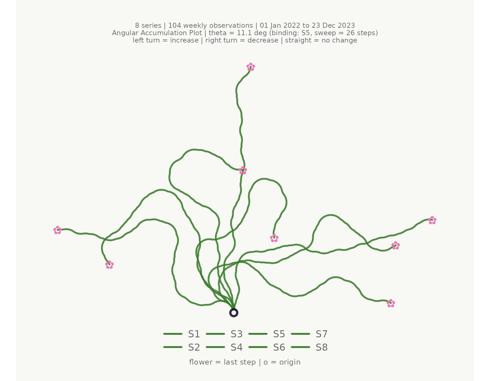
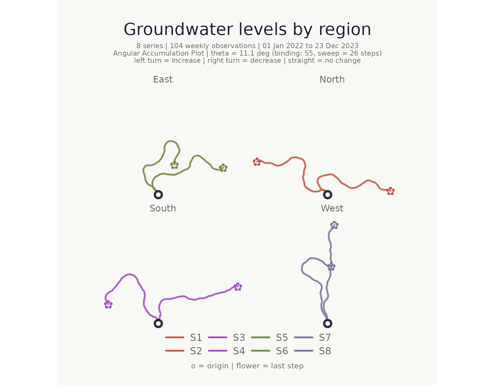
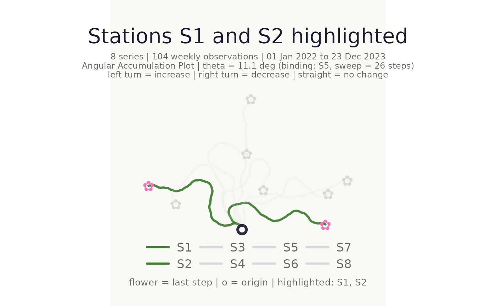
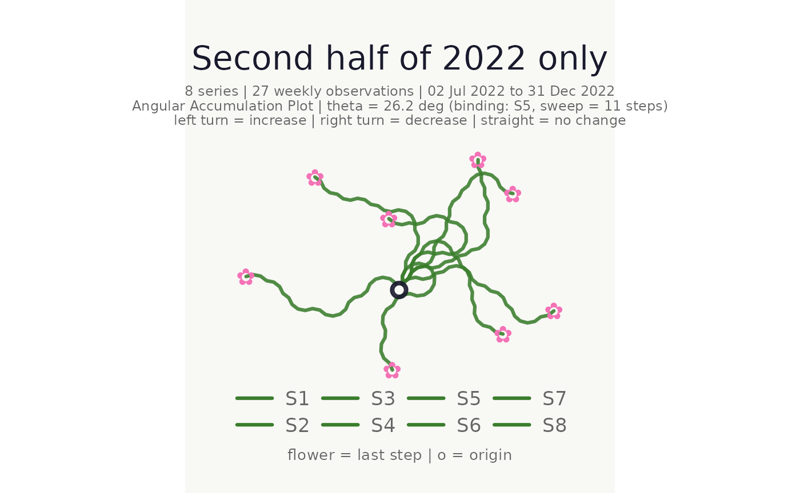
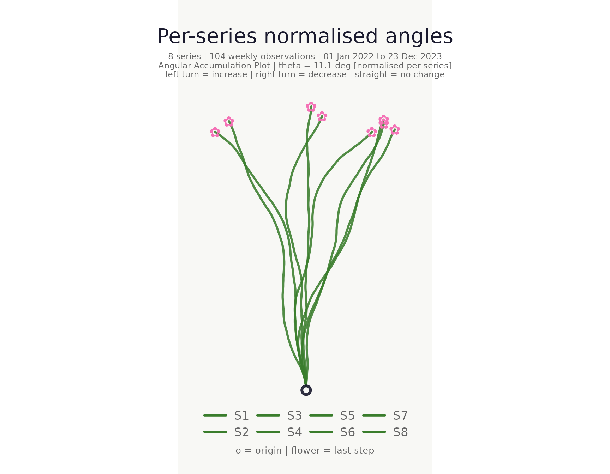
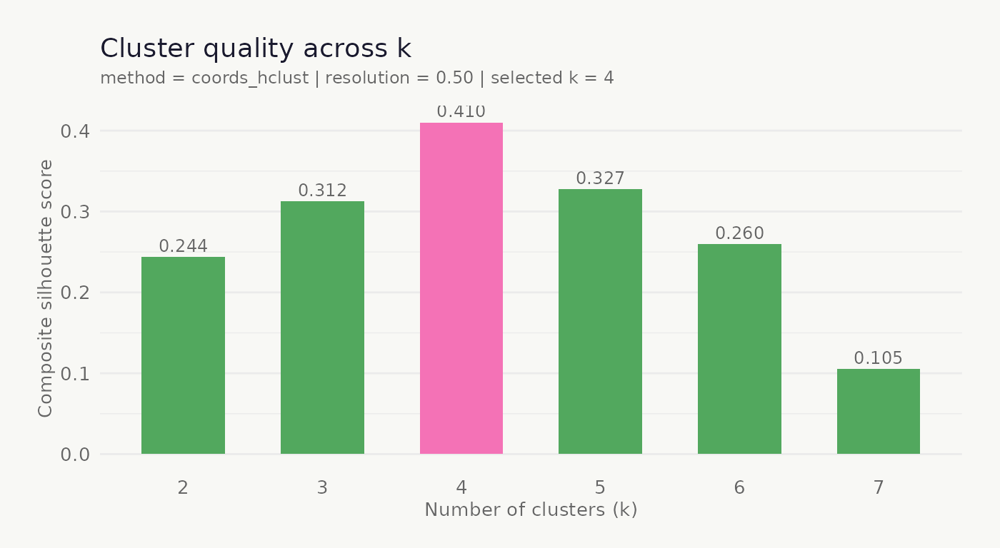
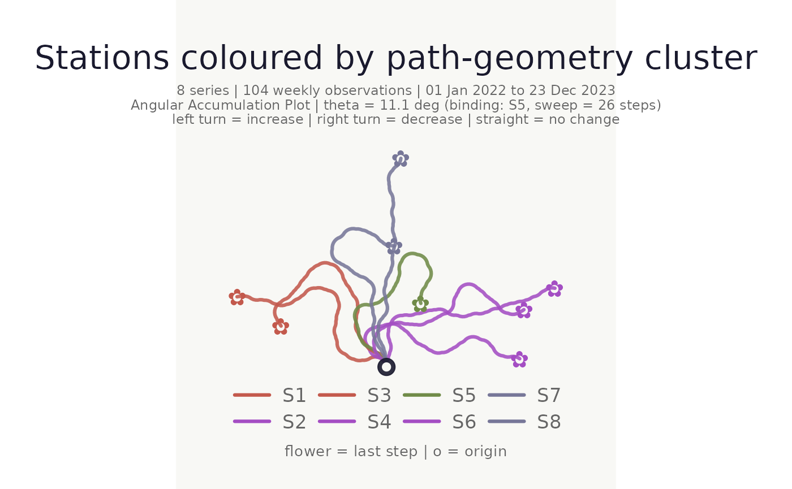
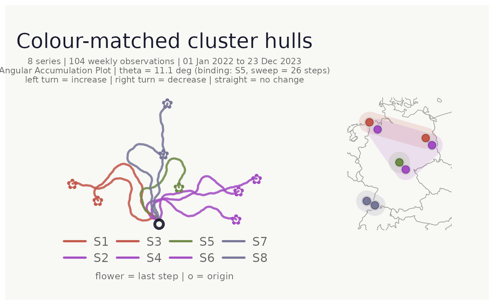
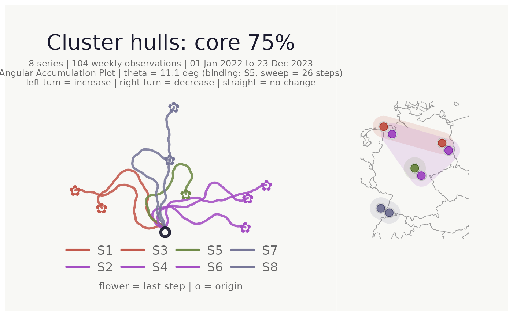

What is a bouquet plot?
An angular accumulation plot encodes each time series as a turtle-graphics path from a shared origin. At every time step:
- an increase turns the heading left by θ,
- a decrease turns it right by θ,
- no change goes straight ahead.
Because every series shares the same origin and angle, paths that look similar belong to series with similar patterns of ups and downs — regardless of their absolute values. The collection of paths radiates from the origin like stems in a bouquet.
Simulated data
Throughout this vignette we use a simulated set of eight groundwater monitoring stations, each with a weekly time series containing a shared seasonal signal plus independent noise.
set.seed(42)
n <- 104L # 2 years, weekly
weeks <- seq(as.Date("2022-01-01"), by = "week", length.out = n)
season <- sin(seq(0, 4 * pi, length.out = n))
gw_long <- tibble::tibble(
week = rep(weeks, 8L),
station = rep(paste0("S", 1:8), each = n),
region = rep(c("North", "North", "South", "South",
"East", "East", "West", "West"), each = n),
lon = rep(c(7.2, 8.1, 13.4, 14.1, 10.5, 11.2, 6.9, 7.8), each = n),
lat = rep(c(53.6, 53.1, 52.5, 52.0, 50.8, 50.3, 48.1, 47.8), each = n),
level_m = c(
8.5 + 0.9 * season + cumsum(rnorm(n, 0.00, 0.18)),
8.3 + 0.8 * season + cumsum(rnorm(n, 0.01, 0.20)),
7.2 + 0.5 * season + cumsum(rnorm(n, 0.02, 0.22)),
7.0 + 0.6 * season + cumsum(rnorm(n, 0.00, 0.19)),
9.1 + 1.1 * season + cumsum(rnorm(n, -0.01, 0.15)),
9.3 + 1.0 * season + cumsum(rnorm(n, -0.02, 0.16)),
6.8 + 0.3 * season + cumsum(rnorm(n, 0.00, 0.28)),
7.5 + 0.4 * season + cumsum(rnorm(n, 0.01, 0.25))
)
)Minimal plot
The simplest call uses the first three columns as time, series, and value.
make_plot_bouquet(
gw_long,
time_col = week,
series_col = station,
value_col = level_m
)## <bouquet_plot> 8 series | theta = 11.1 deg | binding: S5
Colour and faceting
stem_colors and flower_colors each accept a
single hex code, a vector of hex codes, a keyword ("greens"
/ "blossom"), or a bare column name.
make_plot_bouquet(
gw_long,
time_col = week,
series_col = station,
value_col = level_m,
stem_colors = region,
flower_colors = region,
facet_by = region,
title = "Groundwater levels by region"
)## <bouquet_plot> 8 series | theta = 11.1 deg | binding: S5
Highlighting individual series
Use highlight to bring specific series to the
foreground; all others are dimmed to a pale grey.
make_plot_bouquet(
gw_long,
time_col = week,
series_col = station,
value_col = level_m,
highlight = c("S1", "S2"),
title = "Stations S1 and S2 highlighted"
)## <bouquet_plot> 8 series | theta = 11.1 deg | binding: S5
Time window filter
Use from and to to restrict the time range
without pre-filtering.
make_plot_bouquet(
gw_long,
time_col = week,
series_col = station,
value_col = level_m,
from = as.Date("2022-07-01"),
to = as.Date("2022-12-31"),
title = "Second half of 2022 only"
)## <bouquet_plot> 8 series | theta = 26.2 deg | binding: S5
Normalised mode
When normalise = TRUE each series receives its own
per-series θ so every path uses the full angular range independently of
volatility. This aids shape comparison across series with very different
variances.
make_plot_bouquet(
gw_long,
time_col = week,
series_col = station,
value_col = level_m,
normalise = TRUE,
title = "Per-series normalised angles"
)## <bouquet_plot> 8 series | theta = 11.1 deg | binding: S5 [normalised]
Clustering
cluster_bouquet() builds the actual bouquet paths and
clusters series based on path geometry. Three approaches are
available:
-
"coords_*"— clusters on the flattened (x, y) path coordinates. Paths that look similar in the plot cluster together. This is the default. -
"heading_*"— clusters on the cumulative heading sequence. Captures turning-pattern similarity independently of absolute position. -
"area_*"— uses the shoelace area between pairs of paths as the distance. Captures both shape difference and spatial separation in a single scalar.
Each family offers _hclust (Ward’s D2, deterministic),
_kmeans, and _pam (Partitioning Around
Medoids) variants.
clustered <- cluster_bouquet(
gw_long,
time_col = week,
series_col = station,
value_col = level_m
)
summary(clustered)## -- cluster_bouquet summary ----------------------------------------------
## Method : coords_hclust
## Normalise : FALSE
## Seed : none
## Series : 8 k = 4 Resolution = 0.50
## Mean silhouette : 0.410 (reasonable structure)
##
## Auto k selection (composite silhouette score):
## k = 2 : 0.2440
## k = 3 : 0.3125
## k = 4 : 0.4102 <-- selected
## k = 5 : 0.3273
## k = 6 : 0.2600
## k = 7 : 0.1051
##
## Cluster sizes and members:
## C1 (3 series, mean sil = 0.501)
## S2, S4, S6
## C2 (2 series, mean sil = 0.699)
## S1, S3
## C3 (2 series, mean sil = 0.190)
## S7, S8
## C4 (1 series, mean sil = 0.000)
## S5
##
## Per-series silhouette widths:
## S4 C1 0.568 |||||||||||
## S6 C1 0.491 ||||||||||
## S2 C1 0.445 |||||||||
## S1 C2 0.723 ||||||||||||||
## S3 C2 0.674 |||||||||||||
## S8 C3 0.246 |||||
## S7 C3 0.134 |||
## S5 C4 0.000
## ------------------------------------------------------------------------Heading-based clustering
Use "heading_hclust" when you want to group by curvature
pattern regardless of where a path ends up spatially:
cluster_bouquet(
gw_long,
time_col = week,
series_col = station,
value_col = level_m,
method = "heading_hclust"
) |> summary()## -- cluster_bouquet summary ----------------------------------------------
## Method : heading_hclust
## Normalise : FALSE
## Seed : none
## Series : 8 k = 2 Resolution = 0.50
## Mean silhouette : 0.537 (strong structure)
##
## Auto k selection (composite silhouette score):
## k = 2 : 0.3771 <-- selected
## k = 3 : 0.1416
## k = 4 : 0.2996
## k = 5 : 0.2419
## k = 6 : 0.1254
## k = 7 : 0.0194
##
## Cluster sizes and members:
## C1 (6 series, mean sil = 0.497)
## S2, S4, S5, S6, S7, S8
## C2 (2 series, mean sil = 0.658)
## S1, S3
##
## Per-series silhouette widths:
## S6 C1 0.631 |||||||||||||
## S2 C1 0.603 ||||||||||||
## S5 C1 0.592 ||||||||||||
## S4 C1 0.577 ||||||||||||
## S7 C1 0.425 ||||||||
## S8 C1 0.152 |||
## S3 C2 0.692 ||||||||||||||
## S1 C2 0.624 ||||||||||||
## ------------------------------------------------------------------------Area-based clustering
"area_hclust" captures both shape and spatial proximity
in a single geometric distance — two paths that enclose a small area
between them are considered similar:
cluster_bouquet(
gw_long,
time_col = week,
series_col = station,
value_col = level_m,
method = "area_hclust"
) |> summary()## -- cluster_bouquet summary ----------------------------------------------
## Method : area_hclust
## Normalise : FALSE
## Seed : none
## Series : 8 k = 3 Resolution = 0.50
## Mean silhouette : 0.684 (strong structure)
##
## Auto k selection (composite silhouette score):
## k = 2 : 0.1894
## k = 3 : 0.6200 <-- selected
## k = 4 : 0.5897
## k = 5 : 0.4084
## k = 6 : 0.2883
## k = 7 : 0.1116
##
## Cluster sizes and members:
## C1 (3 series, mean sil = 0.769)
## S2, S4, S6
## C2 (3 series, mean sil = 0.524)
## S5, S7, S8
## C3 (2 series, mean sil = 0.795)
## S1, S3
##
## Per-series silhouette widths:
## S4 C1 0.860 |||||||||||||||||
## S6 C1 0.801 ||||||||||||||||
## S2 C1 0.646 |||||||||||||
## S8 C2 0.728 |||||||||||||||
## S5 C2 0.467 |||||||||
## S7 C2 0.376 ||||||||
## S1 C3 0.812 ||||||||||||||||
## S3 C3 0.777 ||||||||||||||||
## ------------------------------------------------------------------------Visualise cluster quality
plot_cluster_quality() plots the composite silhouette
score across all candidate k values; the selected k is highlighted in
pink.
plot_cluster_quality(clustered)
Plot coloured and faceted by cluster
The cluster column works directly with
stem_colors, flower_colors, and
facet_by.
make_plot_bouquet(
clustered,
time_col = week,
series_col = station,
value_col = level_m,
stem_colors = cluster,
flower_colors = cluster,
title = "Stations coloured by path-geometry cluster"
)## <bouquet_plot> 8 series | theta = 11.1 deg | binding: S5
Location map with cluster hulls
When lon_col and lat_col are supplied a
location map is appended to the right of the bouquet panel. Pass the
cluster column to cluster_hull to draw concave hulls around
each cluster’s points. Hull fill colour automatically matches the
cluster’s flower_colors.
make_plot_bouquet(
clustered,
time_col = week,
series_col = station,
value_col = level_m,
stem_colors = cluster,
flower_colors = cluster,
lon_col = lon,
lat_col = lat,
cluster_hull = cluster,
title = "Colour-matched cluster hulls"
)## <bouquet_plot> 8 series | theta = 11.1 deg | binding: S5 + map
Focusing on the cluster core with hull_coverage
When clusters are spatially dense or overlap, hulls drawn over all
points can obscure the map. hull_coverage (default
1) restricts the hull to the fraction of each cluster’s
points that lie closest to the cluster centroid. Setting it to
0.75, for example, excludes the outermost 25% of points
before computing the hull:
make_plot_bouquet(
clustered,
time_col = week,
series_col = station,
value_col = level_m,
stem_colors = cluster,
flower_colors = cluster,
lon_col = lon,
lat_col = lat,
cluster_hull = cluster,
hull_coverage = 0.75, # hull covers the innermost 75% of each cluster
title = "Cluster hulls: core 75%"
)## <bouquet_plot> 8 series | theta = 11.1 deg | binding: S5 + map
Saving plots
save_bouquet() wraps ggplot2::ggsave() with
sensible defaults for the bouquet aspect ratio.
p <- make_plot_bouquet(gw_long, week, station, level_m)
save_bouquet(p, "my_bouquet.png", width = 10, height = 8)Interactive version
make_plot_bouquet_interactive() produces a plotly figure
with hover tooltips. Requires the plotly package.
make_plot_bouquet_interactive(gw_long, week, station, level_m)Full pipeline
A compact end-to-end workflow:
gw_long |>
cluster_bouquet(
time_col = week,
series_col = station,
value_col = level_m,
seed = 42L
) |>
make_plot_bouquet(
time_col = week,
series_col = station,
value_col = level_m,
stem_colors = cluster,
flower_colors = cluster,
lon_col = lon,
lat_col = lat,
cluster_hull = cluster,
hull_coverage = 0.75,
title = "Groundwater directional dynamics"
)